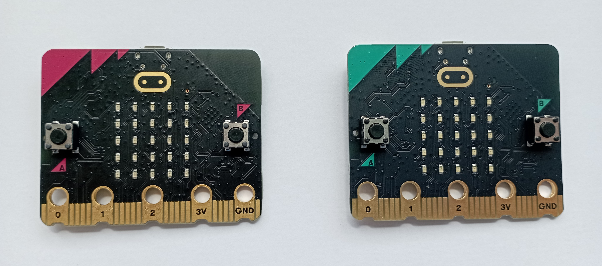
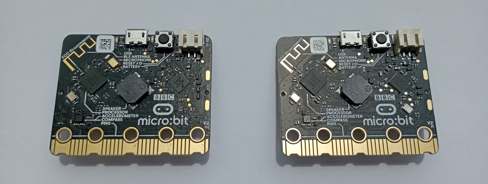
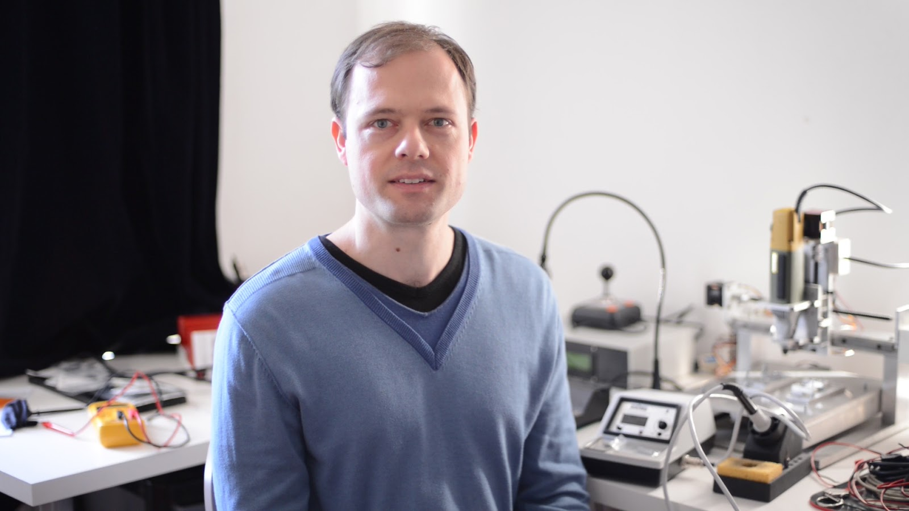
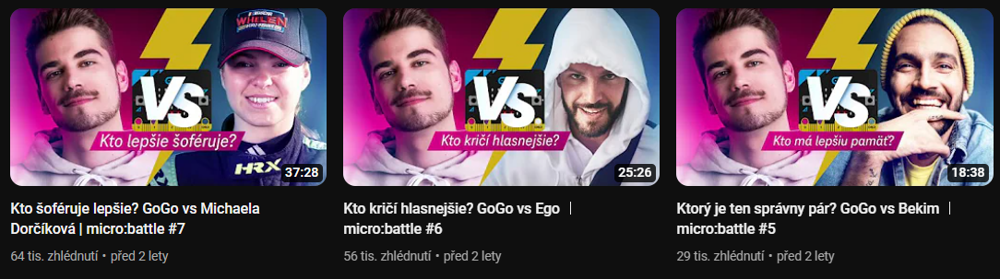
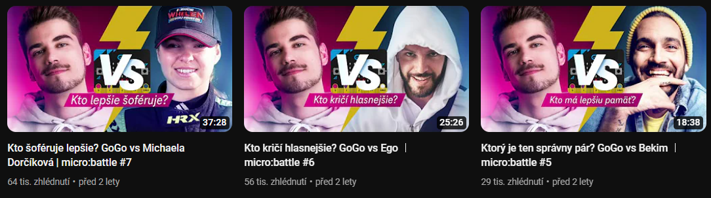

Programování se zařízením micro:bit
Tato webová stránka představuje ucelené prostředí pro prezentaci některých částí z mého výstupní projektu do předmětu Výpočetní technika.
Stránka vznikla jako jedna z částí mého závěrečného projektu.
S micro:bitem jsem se setkal již ke konci prvního ročníku. Zaujala mě jednoduchost programování v blocích, ale zároveň také možnost vytvoření komplexnějších programů.
Cílem tohoto webu je přiblížit návštěvníkům můj projekt. Hlavní částí tohoto projektu je formátovaný dokument, který slouží jako takový učební text. Nachází se v něm samotné představení micro:bitu. Dále také představení prostředí, ve kterých je možno micro:bit programovat a samozřejmě samotná cvičení. Těch je 5 a mají prezentovat základní funkce micro:bitu. Cílem dokumentu bylo také představit základní principy programování.
Micro:bit
Micro:bit je v podstatě takový kapesní počítač. Je to zařízení, se kterým se můžeme seznámit se základními principy programování. Můžeme jej programovat jak v blocích, tak i v samotném kódu - MicroPython či JavaScript.
Micro:bit jako takový vyšel ve dvou verzích.
Druhá verze se oproti té první liší mírně většími rozměry a také přidáním některých funkcí. Navíc je tu mikrofon na snímání zvuku, reproduktor, dotykový senzor a úsporný režim.
Micro:bit je tvořen 5 x 5 displejem vytvořeným z LED diod. Dále jsou zde také dvě programovatelná tlačítka na bocích displeje. Součástí zařízení je také dotykové logo na přední straně a také programovatelné piny na spodu.
Micro:bit zepředu:
Micro:bit zezadu:
MicroPython
MicroPython je programovací jazyk, který je do značné míry kompatibilní s Pythonem 3. Řekl bych, že o Pythonu jste už možná někdy slyšeli. MicroPython je právě optimalizován na práci s mikrokontroléry.
Tento jazyk byl vytvořen australským programátorem Damienem Goeorgem po úspěšné kampani v roce 2013 na crowdfundingové platformě Kickstarter.
První vydání se uskutečnilo 3. května roku 2014. Verze pro micro:bit byla vytvořena v roce 2016.
Loga MicroPythonu:

Tvůrce MicroPythonu Damien George:
Jak programovat?
Micro:bit můžeme programovat dvěma způsoby: bloky nebo za pomocí kódu. Kódem se v našem případě myslí MicroPython.
Obě prostředí mají své výhody i nevýhody. Pojďmě si napřed představit bloky.
Bloky jsou podle funkce barevně odlišeny a dají se i různě upravovat. Toto prostředí je skvělé pro jednoduché programy, které lze s micro:bitem vytvořit.
Prostředí MakeCode, ve kterém bloky programuje najdeme na tomto odkazu: Prostředí MakeCode
Popis prostředí MakeCode:

Dále zde máme již zmíněný MicroPython. Pro řešení některých problemů bude kód mnohem elgantnější.
Programování v kódu se na první pohled zdá velmi složité, ale jsem si jist, že na příkladech vše pochopíte.
Prostředí Python Editor najdete na tomto odkazu: Python Editor
Popis prostředí Python Editor:

Video představující výstupní projekt
Video jsem pojal dost informativně. Projekt jsem ve videu představil a také jsem zdůvodnil jeho volbu. Ke konci videa také došlo na doporučení některých zdrojů a zajímavosti.
Video prezentace mého projektu:
Propagační leták
Leták jsem pojal dost propagačním způsobem.
Jsou v něm představeny a ukázány oba dva možné způsoby programování micro:bitu.
Leták propagující micro:bit:

Předmluva ke cvičením
Cvičení zde budou koncipovány tak, že prvně bude odkaz s krátkým zadáním úlohy. Návštěvníci stránky poté mohou zkusit úlohu naprogramovat. Je jedno jakým způsobem, existuje jich celá řada.
Tento odkaz bude mít název dané úlohy. Pod zadáním bude také přiloženo video, toto video si návštěvníci mohou pustit, aby se i podívali na to, co se budou snažit naprogramovat.
Pod odkazem dané úlohy se nachází odkaz Řešení, na tomto odkazu návštěvnící najdou řešení úlohy v blocích i v kódu.
Pokud by návštěvníci řešení nerozumněli, nic se neděje. Můžou se podívat na podrobné vysvětlení do formátovaného dokumentu.
Přeji všem úspěšné řešení daných úloh.

Čítání od 0 do 9
Tahle úloha je opravdu jednoduchá, zkuste se nad ní zamyslet a určitě na to přijdete.Úkolem je vytvořit program, který nám bude neustále čítat a zobrazovat čísla od 0 do 9.
Při startu si nechte také zobrazit nějaký text či emotikon, aby jste se ujistili, že Vám micro:bit funguje.
Čítání od 0 do 9 - řešení
Řešení v blocích:

Řešení v kódu:

Hrací kostka
Další úloha je o něco složitější, ale myslím si, že na ní taky přijdete.
Naprogramujeme si, respektive vy si naprogramujete, hrací kostku.
Budeme chtít, aby taková hrací kostka zaznamenala zatřesení micro:bitem a zobrazila číslo od 1 do 6.
Pokud padne číslo 6, tak program "háže" dál a hodnoty hodů sčítá.
Taková 6 nám může padnout v tomto programu max. třikrát, takže nejvyšší možné číslo bude 18, podaří se Vám ho hodit?
Dále už jenom můžete přidat, že při nějaké vstupové kombinaci zhasne displej a jednočíselné hodnoty se vymažou.
Hrací kostka - řešení
Řešení v blocích:

Řešení v kódu:

Animace displeje
V této úloze si pohrajeme s displejem, s tím jde u micro:bitu vymýšlet spostu věcí.
Tato úloha bude již náročnější, takže se pravděpodobně budete muset podívat do učebních textů.
Je jedno, jaké použijete vstupy, to je čistě na Vás.
Budeme chtít, aby se nám postupně rozsvěcovala prostředí řada i prostřední sloupec.
Vytvořte podmínku, aby jedna řada vynechávala či vymazávala prostřední LED diodu.
Při dalším vstupu se zhasne celý displej a postupně se rozsvítí a poté zhasne řada do úhlopříčky.
Při tomto všem chceme, aby se při hlasitém zvuku (většinou tlesknutí či klepnutí) displej zhasl.
Animace displeje - řešení
Řešení v blocích:

Řešení v kódu:

LED ON/OFF
Po náročné předchozí úloze si trochu oddychneme.
Zkusíme si sestavit a naprogramovat program, který bude pracovat s piny našeho micro:bitu.
Na sestavení tohoto cvičení, mimo simulátor pragramovacího prostředí, budete potřebovat nějaké propojovací drátky. Já jsem navíc na spojení využil nepájivé pole.
V tomto cvičení budeme zhasínat a rozsvěcovat LED diodu, ale ne tu na displeji.
Nejdřív budeme chtít vytvořit nějakou vodící sekvenci, která nás provede možnostmi našeho programu.
Tuto část nechávám kompletně na Vás.
Při stistku jednoho tlačítka budeme chtít LED rozsvítit, při stisku druhého zhasnout.
Pokud budeme poté nějaký vstup držet, tak se nám bude LED dioda zhasínat a rozsvícet automaticky.
Dále poradím předřadit k LED diodě nějaký ochranný odpor. GND se připojuje ke katodě a pin poté k anodě.
Kde je na LED diodě anoda a katoda a jakou hodnotu odporu vybrat, tak to už nechám na Vás.
LED ON/OFF - řešení
Řešení v blocích:

Rešení v kódu:

Představení rádia
Jak už název napovídá, tak v tomto cvičení si představíme rádio a jeho základní funkci.
Na toto cvičení jsou potřeba 2 micro:bity, takže bych řekl, že většina z Vás bude řešit v simulátoru.
Toto cvičení je popravdě o něco lehčí v blocích než v kódu, řešení cvičení v kódu je zde trochu zjednodušené.
Když jsou potřeba 2 micro:bity, tak jsou také potřeba 2 programy.
Oba dva micro:bity při startu zobrazí jiného smajlíka, aby jsme poznali, který je který.
Vysílač při stiskem jednoho tlačítka pošle náhodné číslo v rozsahu 0 až 9. Stiskem druhého pošle jakoukoli zprávu.
Přijímač poté zprávy zobrazí a podle druhu zprávy zobrazí libovolného smajlíka.
Nezapomeňte na stejnou skupinu rádia :D.
Představení rádia - řešení
Řešení v blocích:


Řešení v kódu


Zajímavosti
V této části ještě připomenu, to co jsem zmiňoval ve videu a přiložím odkazy.
Microbiti
Při svém prouzdání po internetu jsem narazil na opravdu pěkně zpracovanou webovou stránku, na které se nachází spousta řešených úloh, jak v blocích, tak v kódu. Jde zde také představeno mnoho projektů, které jsou s micro:bitem spojeny.
Zde přikládám odkaz na zmíněnou stránku: Microbiti
Micro:battle
Dále jsem chtěl zmínit youtubovou sérii od slovenského youtubera GogoManTV.
Série se nazývá Micro:battle a díl je vždy rozhovor se známou osobností.
V části videa vždy právě představují nějaké zařízení ovládané micro:bitem.
Většinou je to nějaká hra či dovednost, ve kterém proti sobě můžou soupeřit.
Zde jsou poté jednotlivé díly, pokud Vás koncept zaujal:
Ako dokáže VR oklamať MOZOG? - GoGo vs Brngi │ micro:battle #1
Bude zo mňa hudobný producent? - GoGo vs Yaksha │ micro:battle #2
Porazím sumo Sagana? GoGo vs Sagan ︳micro:battle #3
Kto bubnuje rýchlejšie? GoGo vs Nikoleta Šurinová ︳micro:battle #4
Ktorý je ten správny pár? GoGo vs Bekim ︳micro:battle #5
Kto kričí hlasnejšie? GoGo vs Ego ︳micro:battle #6
Kto šoféruje lepšie? GoGo vs Michaela Dorčíková | micro:battle #7
 
